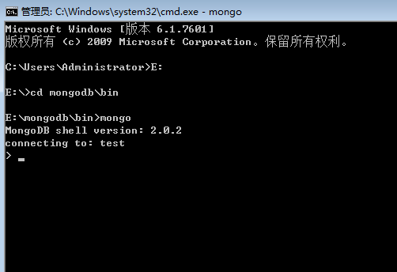
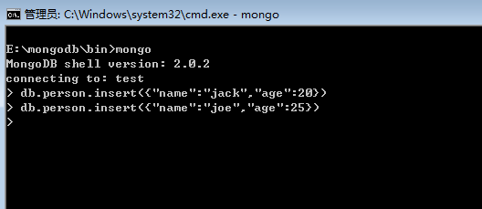
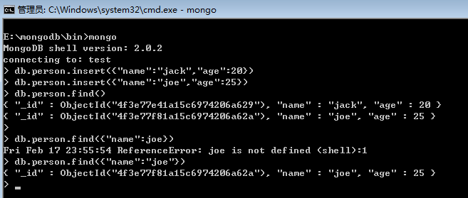
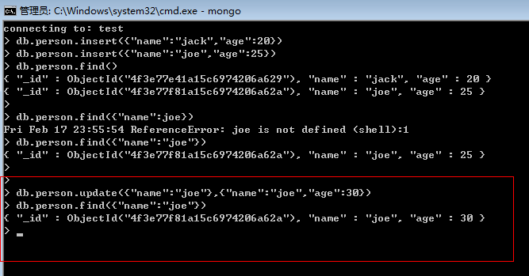
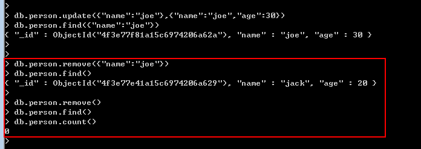

三：基本操作
由于是开篇，就大概的说下基本的“增删查改“，我们再开一个cmd，输入mongo命令打开shell，其实这个shell就是mongodb的客户端，
同时也是一个js的编译器，默认连接的是“test”数据库。

<1> insert 操作
好，数据库有了，下一步就是集合，这里就取集合名为“person”，要注意的就是文档是一个json的扩展（Bson)形式。

<2> find 操作
我们将数据插入后，肯定是要find出来，不然插了也白插，这里要注意两点：
① “_id"： 这个字段是数据库默认给我们加的GUID，目的就是保证数据的唯一性。
② 严格的按照Bson的形式书写文档，不过也没关系，错误提示还是很强大的。

<3> update操作
update方法的第一个参数为“查找的条件”，第二个参数为“更新的值”，学过C#，相信还是很好理解的。

<4> remove操作
remove中如果不带参数将删除所有数据，呵呵，很危险的操作，在mongodb中是一个不可撤回的操作，三思而后行。
